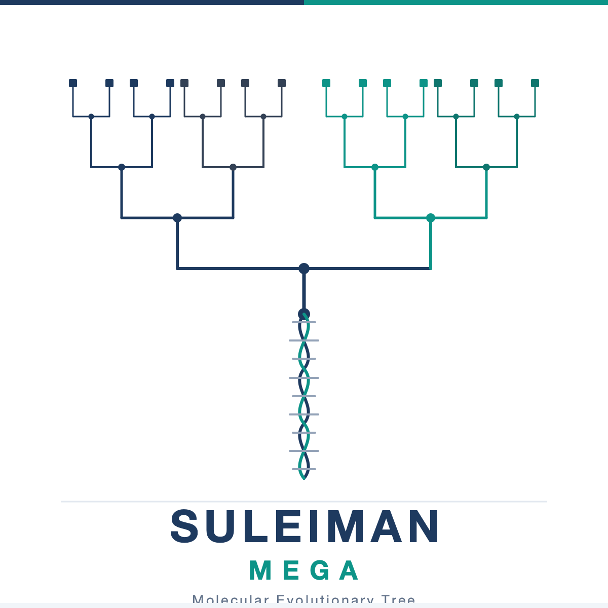

High-fidelity computational genomics, multi-species vertebrate phylogenetics, and timetree reconstruction of the conserved COL1A1 collagen marker across >450 million years.
🇦🇿 AZ: Bu təşkilatdakı əsas tədqiqat dataları, xam sekvensiya bazaları, MEGA hizalanma faylları və əsas kod repozitoriyası məxfidir (Private). Giriş (access) əldə etmək istəyirsinizsə, elektron poçt ünvanıma müraciət edə bilərsiniz: suleyman.hacizade1@gmail.com
🇬🇧 EN: Primary research datasets, raw genomic alignments, and the core repository are Private. To request academic or collaborator access, please contact via email: suleyman.hacizade1@gmail.com
Evolutionary trajectory of the master structural collagen gene across >450 million years of vertebrate radiation, capturing fundamental macroevolutionary transitions.
Statistical substitution model evaluation via BIC selecting GTR+G+I (Γ=α 0.412, Inv=0.318), validated with 1,000 non-parametric bootstrap iterations.
Relative rate molecular clock dating without strict clock assumptions, anchored to the Laurasiatheria fossil divergence (87.5 Mya) to derive absolute epochs.
Publication-grade circular, rectangular, and unrooted phylogenetic tree visual models with clade color coding, branch length scaling, and bootstrap support.
Biophysical purifying selection on $(Gly-X-Y)_n$ triple helix, ModelTest BIC selection, and GTR+G+I parameters (α=0.412, I=0.318, κ=2.84).
Relative rate tests without strict clock assumptions, Laurasiatheria fossil anchor (87.5 Mya), and 450-Mya vertebrate divergence chronogram.
Microevolutionary transmission networks across 30 kinetoplastid isolates, sandfly vectors (P. sergenti), and vertebrate reservoirs.
Felsenstein non-parametric bootstrap resampling (1,000 replicates), Felsenstein pruning dynamic programming, and MUSCLE MSA mechanics.
Human • Terminal Comparative Reference
Pairwise evolutionary distances computed from aligned COL1A1 CDS regions. Lower-left values represent Kimura 2-Parameter (K2P) distances; upper-right values represent Jukes-Cantor (JC69) distances.
| Taxon | H. sapiens | P. troglodytes | M. musculus | R. norvegicus | B. taurus | G. gallus | D. rerio | X. tropicalis |
|---|---|---|---|---|---|---|---|---|
| H. sapiens | — | 0.423 | 0.155 | 0.154 | 0.423 | 0.353 | 0.423 | 0.189 |
| P. troglodytes | 0.426 | — | 0.264 | 0.416 | 0.079 | 0.450 | 0.079 | 0.516 |
| M. musculus | 0.158 | 0.266 | — | 0.198 | 0.264 | 0.312 | 0.264 | 0.220 |
| R. norvegicus | 0.155 | 0.416 | 0.202 | — | 0.416 | 0.381 | 0.416 | 0.280 |
| B. taurus | 0.426 | 0.080 | 0.266 | 0.416 | — | 0.450 | 0.079 | 0.516 |
| G. gallus | 0.357 | 0.450 | 0.320 | 0.387 | 0.450 | — | 0.413 | 0.250 |
| D. rerio | 0.426 | 0.080 | 0.266 | 0.416 | 0.080 | 0.413 | — | 0.516 |
| X. tropicalis | 0.193 | 0.524 | 0.226 | 0.283 | 0.524 | 0.251 | 0.524 | — |
Statistical substitution model ranking evaluated by MEGA12 ModelTest procedure across 24 candidate nucleotide models using the Bayesian Information Criterion (BIC).
| Model Rank | Substitution Model | Parameters ($k$) | BIC Score | AICc Score | Gamma Shape ($\alpha$) | Invariant Sites ($I$) |
|---|---|---|---|---|---|---|
| 🥇 Selected | GTR + G + I | 11 | 47,823.4 | 47,682.1 | 0.412 | 0.318 |
| 🥈 Rank 2 | GTR + G | 10 | 48,104.9 | 47,978.2 | 0.385 | — |
| 🥉 Rank 3 | HKY + G + I | 7 | 48,451.2 | 48,362.0 | 0.430 | 0.305 |
| Rank 4 | Tamura-Nei (TN93) + G | 8 | 48,688.7 | 48,582.4 | 0.398 | — |
| Rank 5 | Kimura 2-Parameter (K2P) | 3 | 49,892.1 | 49,850.3 | — | — |
| Rank 6 | Jukes-Cantor (JC69) | 1 | 50,412.8 | 50,398.9 | — | — |
🔒 Məxfi Tədqiqat Bazası (Private Research Repository): Əsas tədqiqat repozitoriyası və tam həcmli xam datalar Private statusundadır. Tam arxivə və repozitoriyaya giriş (access) əldə etmək üçün elektron poçt vasitəsilə müraciət edin: suleyman.hacizade1@gmail.com
Standard Newick format with branch lengths reconstructed by pure-Python NJ pipeline.
⬇️ Download .nwkEqual-rate distance tree for sensitivity and model saturation comparative analysis.
⬇️ Download .nwkInteractive Tree Of Life publication-grade circular cladogram in scalable vector format.
⬇️ Download SVGNative MEGA multi-sequence alignment file containing aligned vertebrate COL1A1 CDS.
⬇️ Download .meg9-taxa cross-species benchmark tree reconstructed from native MEGA alignment with bootstrap support.
⬇️ Download .nwk30-isolate zoonotic & vector surveillance phylogeny tracking sandflies, hyrax reservoirs, and human cases.
⬇️ Download .nwk| Taxon (Species) | Common Name | NCBI Accession | Length (bp) | Lineage Divergence |
|---|---|---|---|---|
| Homo sapiens | Human | NM_000088.4 | 5,540 bp | Primate reference node |
| Pan troglodytes | Chimpanzee | XM_001170141.4 | 5,453 bp | ~6.4 Mya sister taxon |
| Mus musculus | Mouse | NM_007742.4 | 5,495 bp | Muridae rodent clade |
| Rattus norvegicus | Rat | NM_053304.1 | 5,491 bp | ~13.8 Mya rodent sister |
| Bos taurus | Cattle | NM_174520.3 | 5,498 bp | ~87.5 Mya Laurasiatheria anchor |
| Gallus gallus | Chicken | NM_204297.2 | 5,480 bp | ~308 Mya Sauropsida |
| Xenopus tropicalis | Western Clawed Frog | NM_001016853 | 5,120 bp | ~347 Mya Amphibian anamniote |
| Danio rerio | Zebrafish | NM_212864.2 | 4,985 bp | ~448 Mya Teleost basal outgroup |